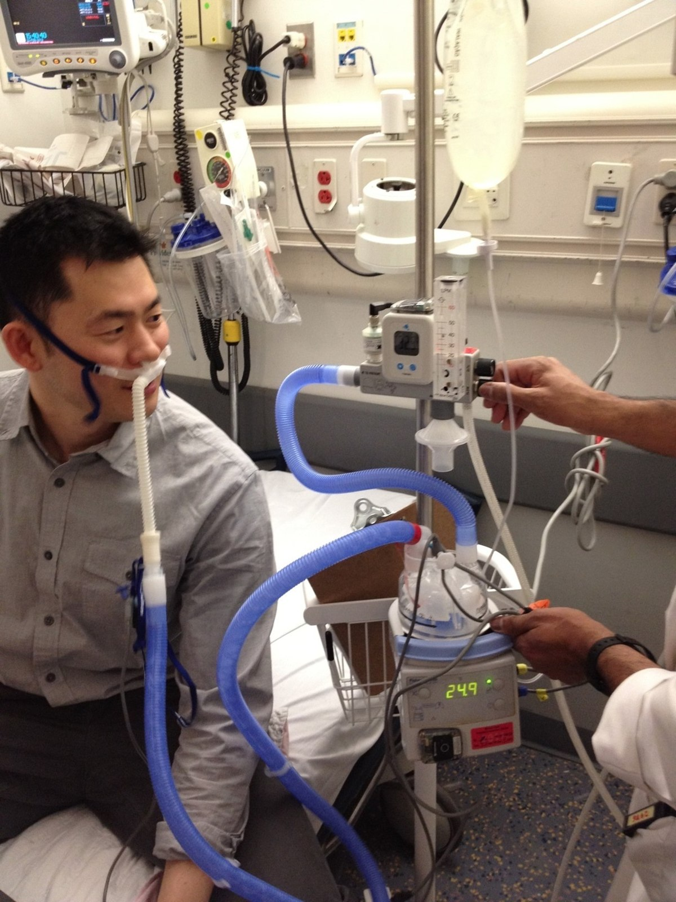
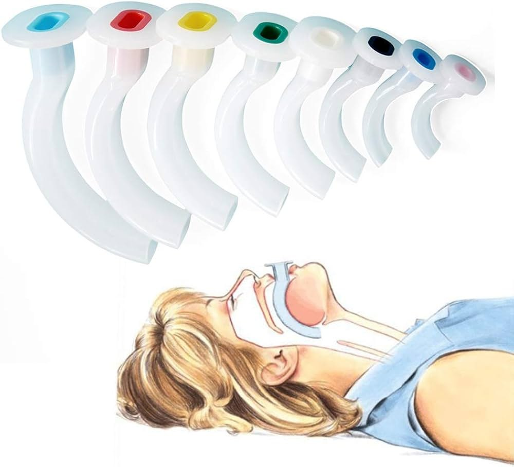
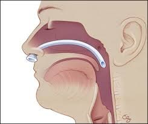
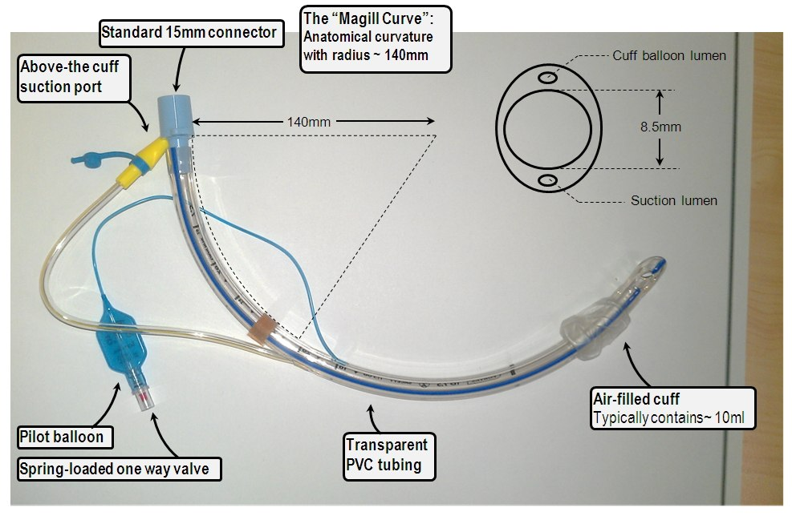
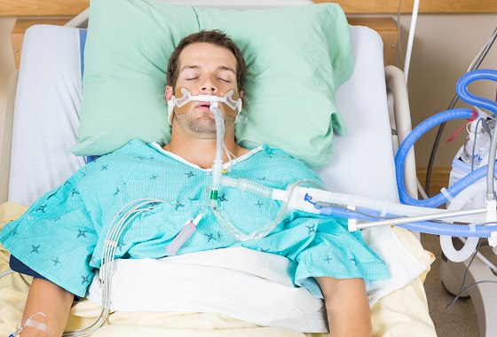
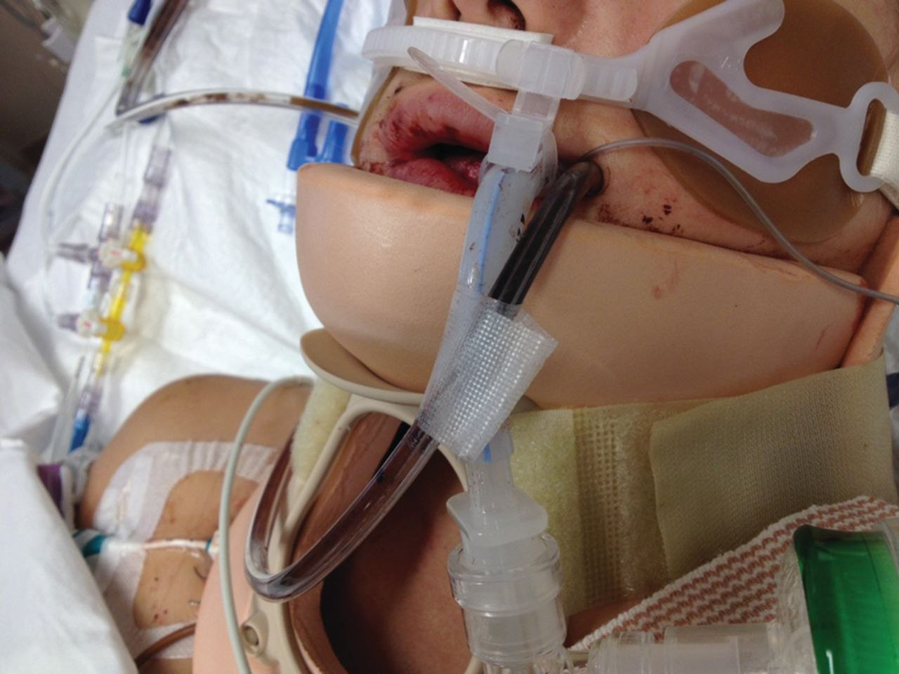
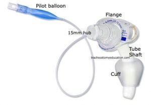
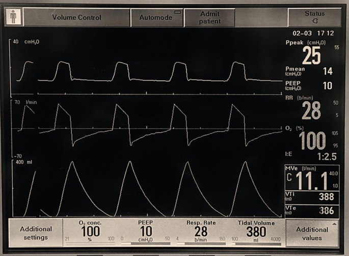
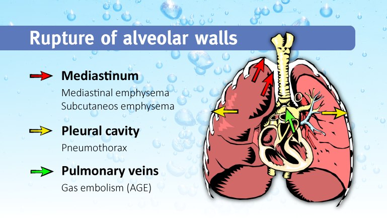

Day 1 · Topic 2
Oxygen Therapy and Mechanical Ventilation
Things to Bring Forward
Earlier Content This Topic Builds On
- Oxygen delivery devices: which device is in use.
- Monitoring oxygen therapy: how to tell whether it is effective.
- Tracheostomy: how to care for a patient with a trach, the nurse's responsibility, how to suction and what indicates suctioning.
- CPAP and BiPAP: noninvasive positive-pressure ventilation.
Oxygen Therapy Principles
Principles of Oxygen Therapy
- Needs an order, usually an admission order set to maintain SpO2. An emergency is the exception.
- Start low and progress up as needed. A nasal cannula starts at 2 L, not 6. Use the lowest flow that maintains mental status and an acceptable SpO2.
- Reported in percentages once past a nasal cannula at 6 L. Lowest 35%, highest 100%.
- Humidification: used in all methods of O2 therapy, and required above 4 L/min. Monitor secretions to make sure it is adequate.
- Inspired gas: about 37 degrees and 100% humidity, managed by respiratory therapy. Dry mucous membranes exchange gas less effectively.
Low Flow
- Patient does the work to breathe. No pressure goes in.
- Patient still pulls in some room air, so FiO2 is not as precisely controlled.
- What most patients are on. An oxygen tent is low flow too.
- More helpful for oxygenation.
High Flow
- More precise and more controlled.
- Better to supplement ventilation: more effective CO2 removal.
- Stays constant when the breathing pattern is irregular, shallow or deep.
- Typically needed when level of consciousness is significantly altered.
Oxygen Therapy Devices
High-Flow Nasal Cannula
- Still a nasal cannula, but it gives positive pressure: it forces air into the airway.
- 14 to 40 L/min, possibly higher, at about 60 to 100% O2.
- Helps CO2 expulsion, so a great device for irregular breathing patterns.
- Better than CPAP or BiPAP for most patients who are hypoxic or hypercapnic.
- Patient has to be able to maintain head and chin position.
- Respiratory therapy sets it up and manages its temperature and humidification.
- Nurse: check it is plugged in and working, and report the liters and the percentage shown on the machine.
Other oxygen therapy devices are taught in the Respiratory review
Charted oxygen has to be correct. Check it at the wall at every assessment, usually every 4 hours. Oxygen comes unplugged.

Noninvasive Positive-Pressure Ventilation
Mode of ventilation to support gas exchange in a patient without an endotracheal tube (not intubated). Mask can be whole face or just nose.
CPAP
- Continuous positive airway pressure.
- Same air pressure on inhale and exhale.
BiPAP
- An inspiratory positive airway pressure (IPAP) and an expiratory positive airway pressure (EPAP).
- Different pressures for inhalation and exhalation.
When It Is Used, and Its Limits
- For many respiratory conditions, usually severe. First line to prevent intubation, or used right at extubation.
- Very helpful for getting CO2 off. Not as helpful in oxygenation respiratory failure.
- Patient has to be able to maintain their own airway.
- Not a long-term solution, though it can run continuously in the hospital: no eating or drinking with the mask on, and a lot of aspiration risk.
- Respiratory therapy coordinates and controls the modes, usually based on pressure control or PEEP.
- Examples: after a procedure, or while too much fentanyl wears off.
CPAP and BiPAP are taught in the Respiratory review
Airway Management
Airway is the most important aspect of any oxygenation or ventilation management. The patient has to be able to maintain it, and it starts with positioning.
| Method | What to Know |
|---|---|
| Positioning |
|
| Oral airway (oropharyngeal airway) |
|
| Nasopharyngeal airway (nasal trumpet) |
|


Artificial Airways
Endotracheal Tube
Endotracheal Tube (ETT or ET Tube)
- The most common way to secure an airway. Inserted through the mouth into the trachea. Nose to trachea is possible with oral trauma, but not common.
- Time to intubate when CPAP, BiPAP or an oral airway does not give the support needed. A big indication: a lot of secretions that are hard to contain.
- Sized #6 to #9. Most common: 7 to 7.5 for a female, 7.5 to 8 for a male.
- Can usually be suctioned through if placed in the hospital, with a red rubber catheter or inline suctioning.
Preparing to Intubate: The Nurse's Responsibilities
- A good working IV.
- Anticipate IV sedation and analgesia, short term or long term. Being intubated is not comfortable.
- Patient is typically paralyzed momentarily with rapid sequence intubation (RSI) drugs.
| Part or Marking | What to Know |
|---|---|
| Radiopaque line |
|
| Cuff |
|
| Pilot balloon |
|
| Marking at the lip |
|
Confirming Placement After Intubation
- Bilateral breath sounds, listened for by whoever intubated, often anesthesia or the ED.
- CO2 sensed by a marker hooked up to the ET tube.
- Chest x-ray ASAP.

Care of the Intubated Patient
| Check | What to Know |
|---|---|
| Verify placement, every assessment |
|
| Oral care |
|
| Verify secure |
|
| Cuff inflated |
|
| Tube clear |
|
| Not bitten |
|
| Sides of the mouth switched |
|
| Secure to the ventilator |
|
| Skin intact |
|
Endotracheal intubation is not a long-term solution: it invites pressure ulcers, VAP and injury to the trachea. A longer-term need means a transition to a tracheostomy.


Tracheostomy
| Topic | What to Know |
|---|---|
| Why it is placed |
|
| Cuff |
|
| Care |
|
| Suctioning |
|

Mechanical Ventilation
Purpose of Mechanical Ventilation
- Support the respiratory system.
- Respiratory failure: the patient cannot clear their own secretions or cannot perform adequate gas exchange.
- Minimizing oxygen demand: the patient is sedated and paralyzed, as in sepsis and trauma, even without a major respiratory problem. Sedation and paralysis lower level of consciousness, so the respiratory system has to be supported.
- Positive pressure ventilation: air is forced into the lungs, not passively accepted, even when the patient fights it.
Six Things the Nurse Is Responsible for Knowing
| Setting | What to Know |
|---|---|
| Mode |
|
| FiO2 |
|
| Tidal volume |
|
| Inspiratory pressure |
|
| Rate |
|
| PEEP |
|

Complications of Mechanical Ventilation
| Complication | What to Know |
|---|---|
| ET tube out of position |
|
| Unplanned extubation |
|
| Laryngeal and tracheal injury |
|
| Oral mucosa damage |
|
Pulmonary Issues Related to Mechanical Ventilation
| Issue | What to Know |
|---|---|
| Barotrauma |
|
| Oxygen toxicity |
|
| Respiratory acidosis or alkalosis |
|
| Infection |
|
| Dysphagia or aspiration |
|

Weaning Considerations
Readiness and Weaning Trials
- Approached in a systematic fashion, always thinking about readiness: can the patient breathe on their own?
- Weaning trial: a pressure support trial, which makes the patient do the work. Done every day.
- Not appropriate for a patient who is sedated and paralyzed.
- Tried for a few minutes first, then for longer. Sometimes 15 to 30 minutes is enough.
- Ready: awake, following instructions, squeezing hands, understanding what is going on. Assess the cough and how weak the patient is too.
Extubation
- Emergency supplies ready.
- Positioning: sitting as high as possible, head of bed at 90 degrees.
- Calm environment, usually without family at the bedside.
- Lights on.
- Pain managed, but level of consciousness not depressed.
Nothing to drink until a bedside swallow is done, even after intubation for a procedure only. The patient will be thirsty. Start with ice chips and advance slowly to water as tolerated. Coughing: go back a step, and a speech evaluation may be needed.